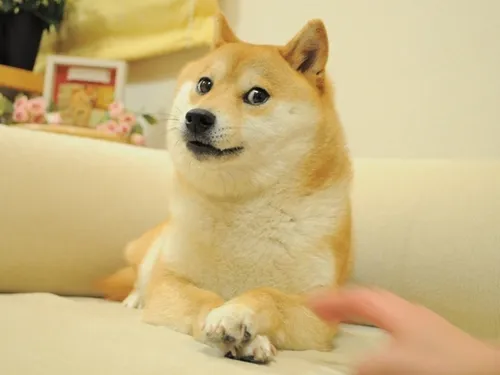

- 비트코인
- 이더리움
- 도지코인
도지코인
떡상가주아!!!!!!!!!! 도지코인이란 이름이나 로고만 봐도 알 수 있듯이 Shibe doge
밈에서 따왔는데[8], 시베 도지 밈이 가볍고 재미를 위한 밈인 것처럼 도지코인도
원래는 비트 코인을 위시한 암호화폐 시장의 열풍을 풍자하기 위해 만들어진
장난식 화폐이다. 그렇기에 진지하게 화폐 단위로 사용되는 비트코인과는 달리,
도지코인은 실험성과 재미를 위해서 운영되는 측면이 강했다. 즉 커뮤니티형
코인이란 얘기. 이런 류의 코인은 커뮤니티의 힘이 강할수록 가격이나 가치에
영향을 받기도 한다. 그래서 도지코인의 초기 사용처는 아래와 같이 Shibe doge
밈 관련 사이트나 도지 코인 재단을 통한 사회 공헌활동에 사용하는 것뿐이었다.
시베 도지 밈의 주인공인 카보스의 주인인 사토 아츠코 씨는 도지코인으로도
기부를 받는다. 실제로 금전적인 지원을 받는다기보다는 재미를 위한 것에
가깝다. 말 가면과 비슷한 캐릭터 상품인 Doge mask도 도지코인으로 구매할 수
있다.[9] 심지어 도지코인으로 사면 10% 할인도 해준다. 2014 소치 동계올림픽에
출전하고 싶었으나 경제적 여건으로 인해 불참하려 했던 자메이카 봅슬레이 팀을
후원해 올림픽 출전을 할 수 있도록 도왔다. 동년, 동계올림픽 후원 이후 동물
관련 유머 사이트인 I can Has Cheezburger[10]의 공동 설립자인 에릭 나카가와는
개발도상국과 제3세계 국가에 식수를 공급하는 비영리 단체인 Charity: Water와
함께 케냐 타나 강 유역에 우물을 건설하기 위해 세계 물의 날 이전까지 4000만
도지 코인을 모금하는 Doge4Water 캠페인을 시작했고, 4천명이 넘는 기부자들의
기부 행렬로 모금에 성공했다.# 그중, Hood란 이름의 이용자는 4000만 코인중
1400만 코인을 단독으로 기부했는데 레딧과 도그 스레드 게시판의 사용자들이 이
기부자의 신원을 밝힐려고했지만 이 기부자는 나는 욕심 많은 자들을 위해 여기에
있다, 나는 프록시, 일회용 기기와 로밍 세계에서 살고 있으니 내 정체성에 대해
걱정하지말라 는 시크한 말을 남기고 사라졌다. 동년 3월 25일엔 미국 자동차
경주인 NASCAR의 드라이버인 조쉬 와이즈를 후원하기 위한 나스카 캠페인을 통해
6,780만 도지 코인을 모금했고, 이를 기념하듯 딥실버에서 배급한 나스카 '14에선
도지코인 자동차가 추가되었다. 하지만 암호화폐가 한창 유행하던 시절에는
시놀로지 계통 나스 해킹으로 도지코인을 채굴하는 사태가 일어나 뉴스를 탄
전적도 있었고,# 중국인들이 대거 매수한 적도 있었다. 실제로 거래할 수 있는
거래소는 해외 한정으로도 꽤 있다.[11] 2020년 7월에 갑자기 2배가 상승하는
모습을 보여줬는데 틱톡의 영향일 것이라는 기사가 나왔다.기사
